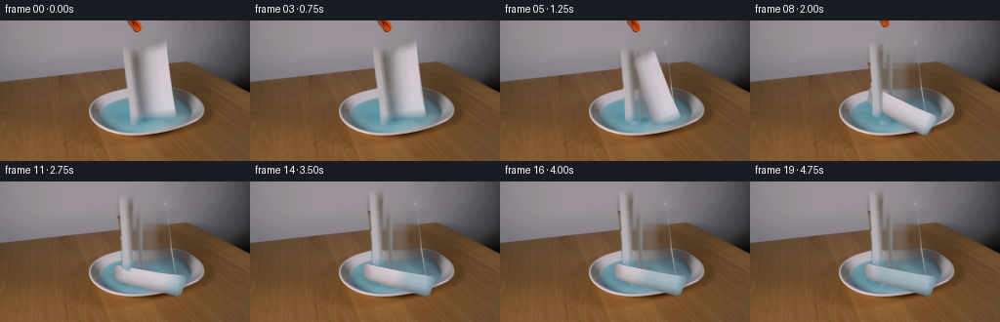
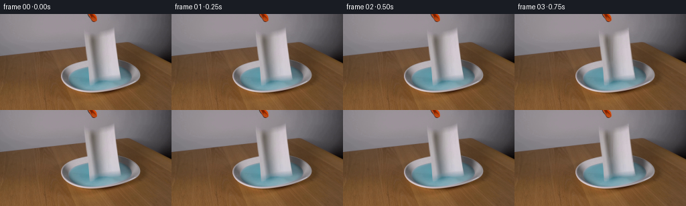

CODING AGENTS AS PIXEL WORLD MODELS
traex/GPT-5.6-Sol · 0127
点击播放 · 原生 RGB 像素
逐轮保存的候选
回放视频、检查图与代码变化。
每份候选均可单独播放。实际图片检查记录在下方工具轨迹中。
候选 01播放与检查图
点击播放 · 原生 RGB 像素


展开代码变化
--- 上一保存版本
+++ 本次保存版本
@@ -0,0 +1,216 @@
+from pathlib import Path
+import cv2
+import numpy as np
+from PIL import Image
+import artifact_io
+
+HERE = Path(__file__).resolve().parent
+H, W = 144, 256
+
+
+def soft_polygon(points, blur=0.8):
+ """Antialiased polygon mask at the native video resolution."""
+ s = 4
+ m = np.zeros((H*s, W*s), np.uint8)
+ p = np.rint(np.asarray(points, np.float32)*s).astype(np.int32)
+ cv2.fillPoly(m, [p], 255, lineType=cv2.LINE_AA)
+ m = cv2.resize(m, (W, H), interpolation=cv2.INTER_AREA).astype(np.float32) / 255.0
+ if blur:
+ m = cv2.GaussianBlur(m, (0, 0), blur)
+ m = np.clip(m, 0, 1)
+ return m
+
+
+def affine_about(center, angle_deg, sx, sy, destination):
+ """Affine map whose anisotropic local axes rotate around center."""
+ th = np.deg2rad(angle_deg)
+ c, s = np.cos(th), np.sin(th)
+ # Same visual direction as cv2.getRotationMatrix2D for positive angles.
+ A = np.array([[c*sx, s*sy], [-s*sx, c*sy]], np.float32)
+ src = np.asarray(center, np.float32)
+ dst = np.asarray(destination, np.float32)
+ b = dst - A @ src
+ return np.c_[A, b].astype(np.float32)
+
+
+def warp_layer(rgb, alpha, matrix):
+ col = cv2.warpAffine(rgb, matrix, (W, H), flags=cv2.INTER_CUBIC,
+ borderMode=cv2.BORDER_CONSTANT, borderValue=(0, 0, 0))
+ a = cv2.warpAffine(alpha, matrix, (W, H), flags=cv2.INTER_CUBIC,
+ borderMode=cv2.BORDER_CONSTANT, borderValue=0)
+ return col.astype(np.float32), np.clip(a.astype(np.float32), 0, 1)
+
+
+def over(dst, src, alpha):
+ a = alpha[..., None]
+ return dst*(1-a) + src*a
+
+
+def reconstruct_background(src, removal):
+ """Texture-preserving removal plus broad continuation for large flat areas."""
+ hard = (removal > 0.08).astype(np.uint8)*255
+ # TELEA follows both the wall gradient and the blue liquid boundary well here.
+ bgr = cv2.cvtColor(src, cv2.COLOR_RGB2BGR)
+ filled = cv2.inpaint(bgr, hard, 7, cv2.INPAINT_TELEA)
+ filled = cv2.cvtColor(filled, cv2.COLOR_BGR2RGB).astype(np.float32)
+
+ # A second row-wise estimate prevents a vertical inpainting ridge through the
+ # broad towel area. It is mixed only in the deep interior of the removed mask.
+ rowfill = src.astype(np.float32).copy()
+ for y in range(H):
+ xs = np.flatnonzero(hard[y])
+ if not len(xs):
+ continue
+ lo, hi = int(xs.min()), int(xs.max())
+ l0, l1 = max(0, lo-8), max(1, lo-2)
+ r0, r1 = min(W-1, hi+2), min(W, hi+9)
+ left = np.median(src[y, l0:l1], axis=0) if l1 > l0 else src[y, max(lo-1, 0)]
+ right = np.median(src[y, r0:r1], axis=0) if r1 > r0 else src[y, min(hi+1, W-1)]
+ xx = np.linspace(0, 1, hi-lo+1, dtype=np.float32)[:, None]
+ rowfill[y, lo:hi+1] = left*(1-xx) + right*xx
+ rowfill = cv2.GaussianBlur(rowfill, (0, 0), 2.2, sigmaY=0.7)
+ deep = cv2.GaussianBlur((hard > 0).astype(np.float32), (0, 0), 3.5)
+ deep = np.clip((deep-0.45)*2.2, 0, 0.52)[..., None]
+ filled = filled*(1-deep) + rowfill*deep
+ # Outside the antialiased removal footprint must remain exactly photographic.
+ a = np.clip(removal[..., None]*1.08, 0, 1)
+ return src.astype(np.float32)*(1-a) + filled*a
+
+
+def add_ripples(frame, age, strength):
+ """Small clipped rings caused by the towel touching the liquid."""
+ if strength <= 0:
+ return frame
+ canvas = np.zeros((H, W), np.float32)
+ # Several asynchronous rings, expanding horizontally in perspective.
+ for delay, gain in ((0.0, 1.0), (0.28, .62), (0.55, .38)):
+ u = age-delay
+ if u <= 0 or u >= 1.15:
+ continue
+ rx = 5 + 35*u
+ ry = 1.6 + 8.0*u
+ cv2.ellipse(canvas, (154, 99), (int(rx), max(1, int(ry))), 0, 0, 360,
+ float(gain*(1-u/1.2)), 1, cv2.LINE_AA)
+ canvas = cv2.GaussianBlur(canvas, (0, 0), .45)
+ yy, xx = np.mgrid[0:H, 0:W]
+ liquid = (((xx-149)/53.0)**2 + ((yy-98)/20.0)**2 <= 1).astype(np.float32)
+ # Limit highlights to the visible light-blue interior, not the wooden table.
+ source_blue = ((frame[..., 2] > frame[..., 0]+12) & (yy > 76) & (yy < 117)).astype(np.float32)
+ ring = np.clip(canvas*liquid*source_blue*strength, 0, .34)[..., None]
+ light = np.array([176, 204, 211], np.float32)
+ return frame*(1-ring) + light*ring
+
+
+def main():
+ src = np.asarray(Image.open(HERE/'first_frame.png').convert('RGB'), dtype=np.uint8)
+
+ # The slightly irregular outline follows the original torn paper edge.
+ towel_alpha = soft_polygon([
+ (165, 21), (171, 25), (172, 40), (174, 57), (175, 70),
+ (177, 82), (180, 95), (176, 99), (151, 98), (147, 94),
+ (146, 72), (146, 49), (146, 32), (150, 26)
+ ], .65)
+
+ # Orange handle, slim metal/black grabber stem and its lower gripping end.
+ handle = soft_polygon([(129,0),(144,0),(146,8),(143,12),(137,12),(132,9)], .55)
+ stem = soft_polygon([
+ (135,10),(145,10),(143,23),(140,29),(140,45),(141,63),
+ (142,82),(143,99),(140,105),(133,102),(132,91),(131,76),
+ (129,66),(127,54),(124,47),(124,31),(130,28),(134,22)
+ ], .75)
+ tool_alpha = np.maximum(handle, stem)
+
+ # Keep the layers separate; the tool is reconstructed behind the towel where
+ # their soft boundaries touch.
+ removal = np.maximum(towel_alpha, tool_alpha)
+ background = reconstruct_background(src, removal)
+ srcf = src.astype(np.float32)
+
+ # Source-local wetting coordinate: liquid climbs from the torn lower edge.
+ yy = np.arange(H, dtype=np.float32)[:, None]
+ wet_coordinate = np.clip((yy-25.0)/74.0, 0, 1)
+ wet_coordinate = np.repeat(wet_coordinate, W, axis=1) * towel_alpha
+
+ frames = []
+ for i in range(20):
+ if i <= 2:
+ # A brief true hold makes the release readable and guarantees no camera drift.
+ frame = srcf.copy()
+ frames.append(np.clip(frame, 0, 255).astype(np.uint8))
+ continue
+
+ # Release starts at 0.75 s. The vertical towel accelerates and swings as it falls.
+ fall = np.clip((i-3)/7.0, 0, 1)
+ eased = fall*fall*(3-2*fall)
+ # It settles slightly after contact rather than freezing unnaturally.
+ settle = 0.0 if i <= 10 else 1.0-np.exp(-(i-10)/2.2)
+ angle = 74.0*eased + 3.0*np.sin((i-10)*1.45)*np.exp(-max(i-10,0)/2.0)*(i>10)
+ cx = 162.0 - 9.5*eased + 1.1*np.sin(i*.8)*settle
+ cy = 61.0 + 37.5*eased + 1.0*np.sin((i-10)*1.8)*np.exp(-max(i-10,0)/2.3)*(i>10)
+ sx = 1.0 - .33*eased - .04*settle
+ sy = 1.0 - .04*eased
+ towel_M = affine_about((162, 61), angle, sx, sy, (cx, cy))
+ towel_col, towel_a = warp_layer(srcf, towel_alpha, towel_M)
+
+ # Tool tips open away from the paper, then the operator withdraws it upward.
+ open_amt = np.clip((i-3)/3.0, 0, 1)
+ withdraw = np.clip((i-6)/7.0, 0, 1)
+ tool_M = affine_about((139, 8), -3.8*open_amt, 1, 1,
+ (139-2.0*open_amt, 8-18.0*withdraw))
+ tool_col, tool_a = warp_layer(srcf, tool_alpha, tool_M)
+
+ frame = background.copy()
+
+ # Contact occurs around frame 9/10; disturbances fade over the last seconds.
+ contact_age = max(0.0, (i-9)/8.0)
+ ripple_strength = np.exp(-max(i-9, 0)/8.5) if i >= 9 else 0
+ frame = add_ripples(frame, contact_age, ripple_strength)
+
+ # Soft projected shadow anchors the falling paper to the liquid plane.
+ sh = cv2.GaussianBlur(towel_a, (0,0), 3.0)
+ sh = cv2.warpAffine(sh, np.float32([[1,0,1],[0,1,3]]), (W,H),
+ flags=cv2.INTER_LINEAR, borderMode=cv2.BORDER_CONSTANT)
+ ygrid, xgrid = np.mgrid[0:H,0:W]
+ basin = ((((xgrid-150)/57)**2 + ((ygrid-99)/21)**2) <= 1).astype(np.float32)
+ sh *= basin * (0.07 + .08*eased)
+ frame *= (1-sh[...,None])
+
+ # Gradual capillary wetting after impact. Keep source luminance and fibers,
+ # while shifting color toward the liquid's blue-gray.
+ if i >= 9:
+ wet_progress = np.clip((i-9)/10.0, 0, 1)
+ wet_src = np.clip((wet_coordinate - (1.0-wet_progress)*.86)*5.0, 0, 1)
+ wet_warp = cv2.warpAffine(wet_src.astype(np.float32), towel_M, (W,H),
+ flags=cv2.INTER_CUBIC, borderMode=cv2.BORDER_CONSTANT)
+ wet_warp = np.clip(cv2.GaussianBlur(wet_warp, (0,0), 1.0), 0, 1) * towel_a
+ lum = towel_col.mean(axis=2, keepdims=True)
+ bluepaper = np.concatenate((lum*.67, lum*.83, lum*.89), axis=2)
+ w = (.63*wet_warp)[...,None]
+ towel_col = towel_col*(1-w) + bluepaper*w
+
+ # During the grip the stem is visually in front; after release, ordering is
+ # inconsequential but retained for a coherent single-shot composite.
+ frame = over(frame, towel_col, towel_a)
+ frame = over(frame, tool_col, tool_a)
+
+ # A thin, fading bright contact ripple in front of the towel at impact.
+ if 9 <= i <= 13:
+ front = np.zeros((H,W), np.float32)
+ u = (i-9)/5.0
+ cv2.ellipse(front, (154,101), (int(8+25*u), int(2+5*u)), 0, 8, 172,
+ float(.22*(1-u*.75)), 1, cv2.LINE_AA)
+ front = cv2.GaussianBlur(front, (0,0), .35)[...,None]
+ frame = frame*(1-front) + np.array([181,207,213],np.float32)*front
+
+ frames.append(np.clip(frame, 0, 255).astype(np.uint8))
+
+ frames = np.stack(frames, axis=0)
+ # Contract-critical exact identity, independent of compositing implementation.
+ frames[0] = src
+ assert frames.shape == (20, 144, 256, 3) and frames.dtype == np.uint8
+ assert np.array_equal(frames[0], src)
+ artifact_io.save(frames, HERE)
+
+
+if __name__ == '__main__':
+ main()
可观测工具轨迹
实际执行的命令与返回图片。
命令 1exit 0
/bin/bash -lc "cat GENERATION_RULES.md && printf '\\n--- PROMPT ---\\n' && cat prompt.txt"
命令 2exit 0
/bin/bash -lc "find . -maxdepth 2 -type f -printf '%p\\n' | sort && printf '\\n--- TOOLS ---\\n' && command -v ffmpeg || true && command -v python3 || true"
命令 3exit 0
/bin/bash -lc "python3 - <<'PY'
from PIL import Image
im=Image.open('first_frame.png')
print(im.mode, im.size)
print('bbox', im.getbbox())
print('extrema', im.getextrema())
PY"命令 4exit 0
/bin/bash -lc "python3 - <<'PY'
from PIL import Image
import numpy as np
im=np.array(Image.open('first_frame.png'))
# quantized dominant colors
q=(im//16)*16+8
u,c=np.unique(q.reshape(-1,3),axis=0,return_counts=True)
for i in np.argsort(c)[-30:][::-1]: print(tuple(u[i]),int(c[i]))
# block average grid 16x9 using rough color words
print('\\nBLOCK AVG 16x9')
for y in range(0,144,16):
print(' '.join('#%02x%02x%02x'%tuple(im[y:y+16,x:x+16].mean((0,1)).astype(int)) for x in range(0,256,16)))
PY"命令 5exit 0
/bin/bash -lc "python3 - <<'PY'
from PIL import Image
import numpy as np
im=np.array(Image.open('first_frame.png')).astype(int)
# print 64x36 map based broad classes every 4x4 average: W white, C cyan, O orange, K dark, B brown/beige, g gray
for y in range(0,144,4):
s=''
for x in range(0,256,4):
r,g,b=im[y:y+4,x:x+4].mean((0,1))
mx=max(r,g,b); mn=min(r,g,b)
if mx<45: ch='K'
elif mx<80: ch='k'
elif r>1.35*b and r>1.15*g and r>100: ch='O'
elif b>1.13*r and g>1.05*r and b>90: ch='C'
elif mn>190: ch='W'
elif mn>150: ch='w'
elif mx-mn<20: ch='g'
elif r>b*1.2 and g>b*1.1: ch='B'
else: ch='.'
s+=ch
print(f'{y:03d} {s}')
PY"命令 6exit 0
/bin/bash -lc "python3 - <<'PY' mods=['cv2','numpy','scipy','sklearn','PIL'] for m in mods: try: x=__import__(m); print(m,'ok',getattr(x,'__version__','')) except Exception as e: print(m,'NO',e) PY"
命令 7exit 0
/bin/bash -lc "python3 - <<'PY'
import cv2,numpy as np
im=cv2.imread('first_frame.png'); hsv=cv2.cvtColor(im,cv2.COLOR_BGR2HSV)
for name,m in {
'orange':((hsv[:,:,0]<25)&(hsv[:,:,1]>80)&(hsv[:,:,2]>70)),
'cyan':((hsv[:,:,0]>80)&(hsv[:,:,0]<115)&(hsv[:,:,1]>30)&(hsv[:,:,2]>70)),
'white':((hsv[:,:,1]<35)&(hsv[:,:,2]>170)),
'dark':(hsv[:,:,2]<65),
'sat':(hsv[:,:,1]>80)
}.items():
n,l,st,cen=cv2.connectedComponentsWithStats(m.astype('uint8'),8)
print('\\n',name,'total',m.sum())
for i in np.argsort(st[1:,4])[::-1][:20]+1:
x,y,w,h,a=st[i]; print(a,(x,y,w,h),'center',cen[i].round(1))
PY"命令 8exit 0
/bin/bash -lc "python3 - <<'PY'
from PIL import Image
import numpy as np, cv2
im=np.array(Image.open('first_frame.png'))
# detailed 2x2 map ROI x100:210 y0:120, symbols from HSV/color
hsv=cv2.cvtColor(im,cv2.COLOR_RGB2HSV)
for y in range(0,120,2):
s=''
for x in range(100,220,2):
p=im[y:y+2,x:x+2].mean((0,1)); h,sat,v=cv2.cvtColor(np.uint8([[p]]),cv2.COLOR_RGB2HSV)[0,0]
r,g,b=p
if v<45: ch='#'
elif v<75: ch='K'
elif sat<25 and v>190: ch='W'
elif sat<35 and v>155: ch='w'
elif sat<30: ch='g'
elif h<24 and sat>80: ch='O'
elif 80<h<115 and sat>35: ch='C'
elif h<30 and sat>40: ch='b'
else: ch='.'
s+=ch
print(f'{y:03d} {s}')
PY"命令 9exit 0
/bin/bash -lc "python3 - <<'PY'
import cv2,numpy as np
im=cv2.imread('first_frame.png')
g=cv2.cvtColor(im,cv2.COLOR_BGR2GRAY)
# Laplacian/gradient summary per 8x8, likely objects details
gx=cv2.Sobel(g,cv2.CV_32F,1,0); gy=cv2.Sobel(g,cv2.CV_32F,0,1); z=np.sqrt(gx*gx+gy*gy)
for y in range(0,144,8):
print(f'{y:03d}', ' '.join('%3d'%min(999,z[y:y+8,x:x+8].mean()) for x in range(0,256,8)))
PY"命令 10exit 0
/bin/bash -lc "python3 - <<'PY'
from PIL import Image
import numpy as np
im=np.array(Image.open('first_frame.png'))
pts=[(138,5),(138,15),(138,25),(138,35),(138,45),(138,55),(138,65),(138,75),(138,85),(138,95),
(110,30),(110,40),(110,50),(110,60),(110,70),(110,80),(110,90),(110,100),
(125,30),(125,40),(125,50),(125,60),(125,70),(125,80),(125,90),(125,100),
(155,20),(155,30),(155,40),(155,50),(155,60),(155,70),(155,80),(155,90),(155,100),
(170,20),(170,30),(170,40),(170,50),(170,60),(170,70),(170,80),(170,90),(170,100),
(185,30),(185,50),(185,70),(185,90),(185,105)]
for x,y in pts: print((x,y),tuple(im[y,x]))
PY"命令 11exit 0
/bin/bash -lc "python3 - <<'PY'
import cv2,numpy as np
im=cv2.imread('first_frame.png'); hsv=cv2.cvtColor(im,cv2.COLOR_BGR2HSV)
m=((hsv[:,:,1]<40)&(hsv[:,:,2]>150)).astype(np.uint8)
# report x ranges each row for light desat in x80:210
for y in range(0,121,2):
a=np.where(m[y,80:211])[0]+80
runs=[]
if len(a):
st=pr=a[0]
for v in a[1:]:
if v>pr+1:runs.append((st,pr));st=v
pr=v
runs.append((st,pr))
print(y,[r for r in runs if r[1]-r[0]>=2])
PY"命令 12exit 0
/bin/bash -lc "python3 - <<'PY'
import cv2,numpy as np
im=cv2.imread('first_frame.png')
# Canny contours x80:220 y0:120 bounding boxes + area/perimeter
ed=cv2.Canny(im,40,100)
cs,_=cv2.findContours(ed,cv2.RETR_LIST,cv2.CHAIN_APPROX_SIMPLE)
out=[]
for c in cs:
x,y,w,h=cv2.boundingRect(c); ar=cv2.contourArea(c)
if x<220 and x+w>80 and y<120 and w*h>20: out.append((round(ar,1),round(cv2.arcLength(c,False),1),(x,y,w,h)))
for z in sorted(out,reverse=True)[:60]:print(z)
PY"命令 13exit 0
/bin/bash -lc 'cat artifact_io.py'
命令 14exit 0
/bin/bash -lc "python3 - <<'PY'
import cv2,numpy as np
im=cv2.imread('first_frame.png'); g=cv2.cvtColor(im,cv2.COLOR_BGR2GRAY)
# vertical edge magnitude averaged local, report positions > thresholds per row
sx=np.abs(cv2.Sobel(g,cv2.CV_32F,1,0,ksize=3))
sy=np.abs(cv2.Sobel(g,cv2.CV_32F,0,1,ksize=3))
for y in range(0,120,2):
vals=sx[y:y+2].mean(0)
inds=np.where(vals>60)[0]
runs=[]
if len(inds):
st=pr=inds[0]
for v in inds[1:]:
if v>pr+1:runs.append((st,pr,int(vals[st:pr+1].max())));st=v
pr=v
runs.append((st,pr,int(vals[st:pr+1].max())))
print('%03d'%y,runs)
PY"命令 15exit 1
/bin/bash -lc "cat > generate.py <<'PY'
from pathlib import Path
import cv2
import numpy as np
from PIL import Image
import artifact_io
HERE = Path(__file__).resolve().parent
H, W = 144, 256
def soft_polygon(points, blur=0.8):
\"\"\"Antialiased polygon mask at the native video resolution.\"\"\"
s = 4
m = np.zeros((H*s, W*s), np.uint8)
p = np.rint(np.asarray(points, np.float32)*s).astype(np.int32)
cv2.fillPoly(m, [p], 255, lineType=cv2.LINE_AA)
m = cv2.resize(m, (W, H), interpolation=cv2.INTER_AREA).astype(np.float32) / 255.0
if blur:
m = cv2.GaussianBlur(m, (0, 0), blur)
m = np.clip(m, 0, 1)
return m
def affine_about(center, angle_deg, sx, sy, destination):
\"\"\"Affine map whose anisotropic local axes rotate around center.\"\"\"
th = np.deg2rad(angle_deg)
c, s = np.cos(th), np.sin(th)
# Same visual direction as cv2.getRotationMatrix2D for positive angles.
A = np.array([[c*sx, s*sy], [-s*sx, c*sy]], np.float32)
src = np.asarray(center, np.float32)
dst = np.asarray(destination, np.float32)
b = dst - A @ src
return np.c_[A, b].astype(np.float32)
def warp_layer(rgb, alpha, matrix):
col = cv2.warpAffine(rgb, matrix, (W, H), flags=cv2.INTER_CUBIC,
borderMode=cv2.BORDER_CONSTANT, borderValue=(0, 0, 0))
a = cv2.warpAffine(alpha, matrix, (W, H), flags=cv2.INTER_CUBIC,
borderMode=cv2.BORDER_CONSTANT, borderValue=0)
return col.astype(np.float32), np.clip(a.astype(np.float32), 0, 1)
def over(dst, src, alpha):
a = alpha[..., None]
return dst*(1-a) + src*a
def reconstruct_background(src, removal):
\"\"\"Texture-preserving removal plus broad continuation for large flat areas.\"\"\"
hard = (removal > 0.08).astype(np.uint8)*255
# TELEA follows both the wall gradient and the blue liquid boundary well here.
bgr = cv2.cvtColor(src, cv2.COLOR_RGB2BGR)
filled = cv2.inpaint(bgr, hard, 7, cv2.INPAINT_TELEA)
filled = cv2.cvtColor(filled, cv2.COLOR_BGR2RGB).astype(np.float32)
# A second row-wise estimate prevents a vertical inpainting ridge through the
# broad towel area. It is mixed only in the deep interior of the removed mask.
rowfill = src.astype(np.float32).copy()
for y in range(H):
xs = np.flatnonzero(hard[y])
if not len(xs):
continue
lo, hi = int(xs.min()), int(xs.max())
l0, l1 = max(0, lo-8), max(1, lo-2)
r0, r1 = min(W-1, hi+2), min(W, hi+9)
left = np.median(src[y, l0:l1], axis=0) if l1 > l0 else src[y, max(lo-1, 0)]
right = np.median(src[y, r0:r1], axis=0) if r1 > r0 else src[y, min(hi+1, W-1)]
xx = np.linspace(0, 1, hi-lo+1, dtype=np.float32)[:, None]
rowfill[y, lo:hi+1] = left*(1-xx) + right*xx
rowfill = cv2.GaussianBlur(rowfill, (0, 0), (2.2, 0.7))
deep = cv2.GaussianBlur((hard > 0).astype(np.float32), (0, 0), 3.5)
deep = np.clip((deep-0.45)*2.2, 0, 0.52)[..., None]
filled = filled*(1-deep) + rowfill*deep
# Outside the antialiased removal footprint must remain exactly photographic.
a = np.clip(removal[..., None]*1.08, 0, 1)
return src.astype(np.float32)*(1-a) + filled*a
def add_ripples(frame, age, strength):
\"\"\"Small clipped rings caused by the towel touching the liquid.\"\"\"
if strength <= 0:
return frame
canvas = np.zeros((H, W), np.float32)
# Several asynchronous rings, expanding horizontally in perspective.
for delay, gain in ((0.0, 1.0), (0.28, .62), (0.55, .38)):
u = age-delay
if u <= 0 or u >= 1.15:
continue
rx = 5 + 35*u
ry = 1.6 + 8.0*u
cv2.ellipse(canvas, (154, 99), (int(rx), max(1, int(ry))), 0, 0, 360,
float(gain*(1-u/1.2)), 1, cv2.LINE_AA)
canvas = cv2.GaussianBlur(canvas, (0, 0), .45)
yy, xx = np.mgrid[0:H, 0:W]
liquid = (((xx-149)/53.0)**2 + ((yy-98)/20.0)**2 <= 1).astype(np.float32)
# Limit highlights to the visible light-blue interior, not the wooden table.
source_blue = ((frame[..., 2] > frame[..., 0]+12) & (yy > 76) & (yy < 117)).astype(np.float32)
ring = np.clip(canvas*liquid*source_blue*strength, 0, .34)[..., None]
light = np.array([176, 204, 211], np.float32)
return frame*(1-ring) + light*ring
def main():
src = np.asarray(Image.open(HERE/'first_frame.png').convert('RGB'), dtype=np.uint8)
# The slightly irregular outline follows the original torn paper edge.
towel_alpha = soft_polygon([
(165, 21), (171, 25), (172, 40), (174, 57), (175, 70),
(177, 82), (180, 95), (176, 99), (151, 98), (147, 94),
(146, 72), (146, 49), (146, 32), (150, 26)
], .65)
# Orange handle, slim metal/black grabber stem and its lower gripping end.
handle = soft_polygon([(129,0),(144,0),(146,8),(143,12),(137,12),(132,9)], .55)
stem = soft_polygon([
(135,10),(145,10),(143,23),(140,29),(140,45),(141,63),
(142,82),(143,99),(140,105),(133,102),(132,91),(131,76),
(129,66),(127,54),(124,47),(124,31),(130,28),(134,22)
], .75)
tool_alpha = np.maximum(handle, stem)
# Keep the layers separate; the tool is reconstructed behind the towel where
# their soft boundaries touch.
removal = np.maximum(towel_alpha, tool_alpha)
background = reconstruct_background(src, removal)
srcf = src.astype(np.float32)
# Source-local wetting coordinate: liquid climbs from the torn lower edge.
yy = np.arange(H, dtype=np.float32)[:, None]
wet_coordinate = np.clip((yy-25.0)/74.0, 0, 1)
wet_coordinate = np.repeat(wet_coordinate, W, axis=1) * towel_alpha
frames = []
for i in range(20):
if i <= 2:
# A brief true hold makes the release readable and guarantees no camera drift.
frame = srcf.copy()
frames.append(np.clip(frame, 0, 255).astype(np.uint8))
continue
# Release starts at 0.75 s. The vertical towel accelerates and swings as it falls.
fall = np.clip((i-3)/7.0, 0, 1)
eased = fall*fall*(3-2*fall)
# It settles slightly after contact rather than freezing unnaturally.
settle = 0.0 if i <= 10 else 1.0-np.exp(-(i-10)/2.2)
angle = 74.0*eased + 3.0*np.sin((i-10)*1.45)*np.exp(-max(i-10,0)/2.0)*(i>10)
cx = 162.0 - 9.5*eased + 1.1*np.sin(i*.8)*settle
cy = 61.0 + 37.5*eased + 1.0*np.sin((i-10)*1.8)*np.exp(-max(i-10,0)/2.3)*(i>10)
sx = 1.0 - .33*eased - .04*settle
sy = 1.0 - .04*eased
towel_M = affine_about((162, 61), angle, sx, sy, (cx, cy))
towel_col, towel_a = warp_layer(srcf, towel_alpha, towel_M)
# Tool tips open away from the paper, then the operator withdraws it upward.
open_amt = np.clip((i-3)/3.0, 0, 1)
withdraw = np.clip((i-6)/7.0, 0, 1)
tool_M = affine_about((139, 8), -3.8*open_amt, 1, 1,
(139-2.0*open_amt, 8-18.0*withdraw))
tool_col, tool_a = warp_layer(srcf, tool_alpha, tool_M)
frame = background.copy()
# Contact occurs around frame 9/10; disturbances fade over the last seconds.
contact_age = max(0.0, (i-9)/8.0)
ripple_strength = np.exp(-max(i-9, 0)/8.5) if i >= 9 else 0
frame = add_ripples(frame, contact_age, ripple_strength)
# Soft projected shadow anchors the falling paper to the liquid plane.
sh = cv2.GaussianBlur(towel_a, (0,0), 3.0)
sh = cv2.warpAffine(sh, np.float32([[1,0,1],[0,1,3]]), (W,H),
flags=cv2.INTER_LINEAR, borderMode=cv2.BORDER_CONSTANT)
ygrid, xgrid = np.mgrid[0:H,0:W]
basin = ((((xgrid-150)/57)**2 + ((ygrid-99)/21)**2) <= 1).astype(np.float32)
sh *= basin * (0.07 + .08*eased)
frame *= (1-sh[...,None])
# Gradual capillary wetting after impact. Keep source luminance and fibers,
# while shifting color toward the liquid's blue-gray.
if i >= 9:
wet_progress = np.clip((i-9)/10.0, 0, 1)
wet_src = np.clip((wet_coordinate - (1.0-wet_progress)*.86)*5.0, 0, 1)
wet_warp = cv2.warpAffine(wet_src.astype(np.float32), towel_M, (W,H),
flags=cv2.INTER_CUBIC, borderMode=cv2.BORDER_CONSTANT)
wet_warp = np.clip(cv2.GaussianBlur(wet_warp, (0,0), 1.0), 0, 1) * towel_a
lum = towel_col.mean(axis=2, keepdims=True)
bluepaper = np.concatenate((lum*.67, lum*.83, lum*.89), axis=2)
w = (.63*wet_warp)[...,None]
towel_col = towel_col*(1-w) + bluepaper*w
# During the grip the stem is visually in front; after release, ordering is
# inconsequential but retained for a coherent single-shot composite.
frame = over(frame, towel_col, towel_a)
frame = over(frame, tool_col, tool_a)
# A thin, fading bright contact ripple in front of the towel at impact.
if 9 <= i <= 13:
front = np.zeros((H,W), np.float32)
u = (i-9)/5.0
cv2.ellipse(front, (154,101), (int(8+25*u), int(2+5*u)), 0, 8, 172,
float(.22*(1-u*.75)), 1, cv2.LINE_AA)
front = cv2.GaussianBlur(front, (0,0), .35)[...,None]
frame = frame*(1-front) + np.array([181,207,213],np.float32)*front
frames.append(np.clip(frame, 0, 255).astype(np.uint8))
frames = np.stack(frames, axis=0)
# Contract-critical exact identity, independent of compositing implementation.
frames[0] = src
assert frames.shape == (20, 144, 256, 3) and frames.dtype == np.uint8
assert np.array_equal(frames[0], src)
artifact_io.save(frames, HERE)
if __name__ == '__main__':
main()
PY
python3 generate.py
python3 - <<'PY'
from PIL import Image
import numpy as np
z=np.load('pixels.npz')['pixels']
frames=np.stack([np.array(Image.open(f'frames/{i:02d}.png')) for i in range(20)])
src=np.array(Image.open('first_frame.png'))
print('frames',frames.shape,frames.dtype,'first exact',np.array_equal(frames[0],src))
print('mean abs deltas consecutive:', [round(float(np.abs(frames[i].astype(int)-frames[i-1].astype(int)).mean()),2) for i in range(1,20)])
print('changed pixels vs first:', [int(np.any(frames[i]"'!=frames[0],axis=2).sum()) for i in range(20)])
print('"'outputs',z.shape, 'range',frames.min(),frames.max())
PY"命令 16exit 0
/bin/bash -lc "python3 - <<'PY'
p='generate.py'
s=open(p).read().replace(\"cv2.GaussianBlur(rowfill, (0, 0), (2.2, 0.7))\", \"cv2.GaussianBlur(rowfill, (0, 0), 2.2, sigmaY=0.7)\")
open(p,'w').write(s)
PY
python3 generate.py
python3 - <<'PY'
from PIL import Image
import numpy as np
z=np.load('pixels.npz')['pixels']
frames=np.stack([np.array(Image.open(f'frames/{i:02d}.png')) for i in range(20)])
src=np.array(Image.open('first_frame.png'))
print('frames',frames.shape,frames.dtype,'first exact',np.array_equal(frames[0],src))
print('mean abs deltas consecutive:', [round(float(np.abs(frames[i].astype(int)-frames[i-1].astype(int)).mean()),2) for i in range(1,20)])
print('changed pixels vs first:', [int(np.any(frames[i]"'!=frames[0],axis=2).sum()) for i in range(20)])
print('"'outputs',z.shape, 'range',frames.min(),frames.max())
PY"命令 17exit 0
/bin/bash -lc "grep -RInE 'requests|http|torch|transformers|subprocess|first_frame|prompt' generate.py | head -50; wc -l generate.py"
命令 18exit 0
/bin/bash -lc "python3 -m py_compile generate.py && python3 generate.py && python3 - <<'PY'
from pathlib import Path
from PIL import Image
import numpy as np
src=np.asarray(Image.open('first_frame.png').convert('RGB'))
fs=[]
for i in range(20):
p=Path('frames')/f'{i:02d}.png'
assert p.is_file(),p
a=np.asarray(Image.open(p))
assert a.shape==(144,256,3) and a.dtype==np.uint8,(i,a.shape,a.dtype)
fs.append(a)
f=np.stack(fs)
assert np.array_equal(f[0],src)
z=np.load('pixels.npz')['pixels']
assert z.shape==(144,256,20) and z.dtype==np.uint32,(z.shape,z.dtype)
dec=np.empty_like(f)
for i in range(20):
p=z[:,:,i]
dec[i,:,:,0]=(p>>16)&255;dec[i,:,:,1]=(p>>8)&255;dec[i,:,:,2]=p&255
assert np.array_equal(dec,f)
assert Path('index.html').is_file() and Path('inspection.png').is_file()
print('PASS: 20 uint8 RGB frames, 256x144, packed artifact roundtrip exact')
print('PASS: frame 00 pixel-identical; changed later frames:',sum(np.any(f[i]"'!=f[0]) for i in range(1,20)))
print('"'artifact bytes:',Path('pixels.npz').stat().st_size,'html bytes:',Path('index.html').stat().st_size)
PY"保存候选 1 份；完成命令 18 次；可验证图片返回 0 张。原始 API 响应与完整日志保留在本地。